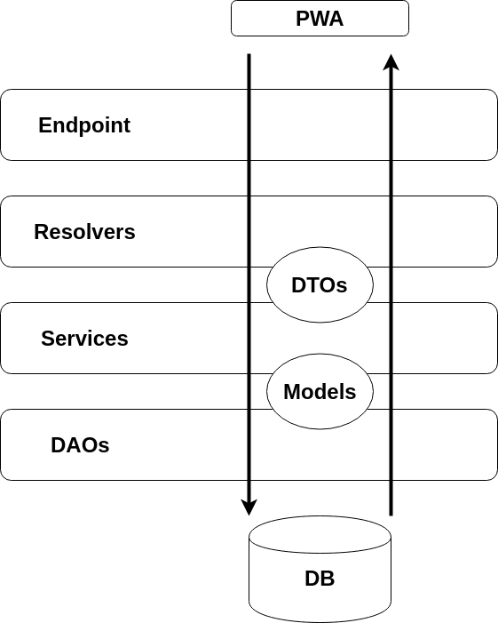

Forewords : JarialTekin is intended to be a simple and extensible
tasks and projects manager.
It is composed of a front-end part (the UI) and a back-end API
(JarialTekin API) currently implemented with Java (1.8).
JarialTekin API is a server side application that implements a GraphQL API
for the JarialTekin progressive web app (PWA).
Its first goal is to provide an interface to access and manipulate data in
database (CRUD operations).
However, further developments will probably extend the funcntionalities of
this application to include the ability to perform more complex processing.
JarialTekin API has a 'layer-based' structure that is represented on the schema below.
